3. Setting up a development environment
Here we show the development environment used to test the Python scripts generated by the AI. This section is for Python beginners. If you already have a Python development environment, skip this entire section and go to the next one.
3.1. Python 3.13.7
The examples in this document have been tested with the Python 3.13.7 interpreter available at |https://www.python.org/downloads/| (August 2025) on a Windows 10 machine:

In [1-2], download the Python installer executable and run it.
Installing Python creates the following file structure [1]:

To run Python in interactive mode, double-click on [2]. Here is an example of Python code to run:
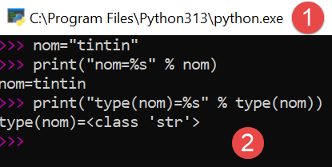
The >>> prompt allows you to enter a Python statement that is executed immediately. The code typed above has the following meaning:
Lines:
- 1: Initialization of a variable. In Python, you do not declare the type of variables. They automatically take on the type of the value assigned to them. This type may change over time;
- 2: display of the name. 'name=%s' is a display format where %s is a formal parameter denoting a string. name is the actual parameter that will be displayed in place of %s;
- 3: the result of the display;
- 4: display of the type of the variable name;
- 5: The variable name is of type class here. In Python 2.7, it would have the value <type 'str'>;
Now, let’s open a Windows console:

The fact that we were able to type [python] in [1] and that the executable [python.exe] was found shows that it is in the Windows machine’s PATH. This is important because it means that Python development tools will be able to find the Python interpreter. We can verify this as follows:

- In [1], we exit the Python interpreter;
- In [2], the command that displays the PATH for executables on the Windows machine;
- In [3], we see that the Python 3.13 interpreter folder is part of the PATH; ## 3.2. The PyCharm Community IDE
To build and run the scripts in this document, we used the [PyCharm] Community Edition editor, available (as of August 2025) at the URL |https://www.jetbrains.com/fr-fr/pycharm/download/#section=windows|:
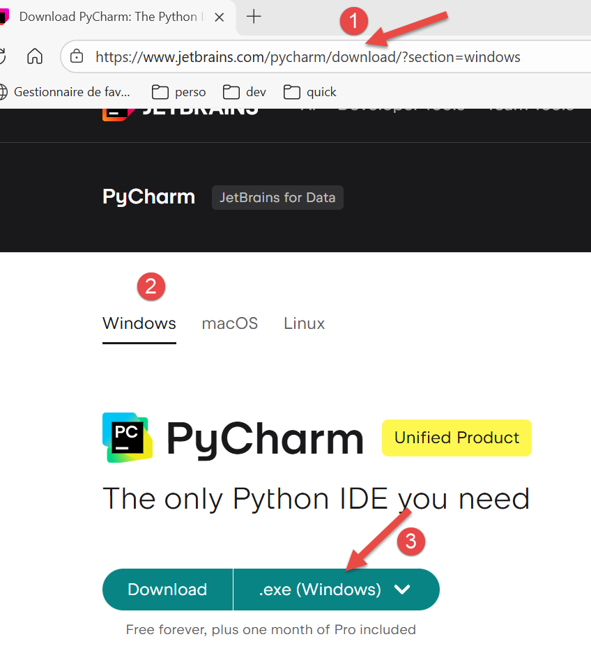

Download the PyCharm Community IDE (here for Windows) [1-4] and install it.
Let’s launch the PyCharm IDE. A configuration panel appears:
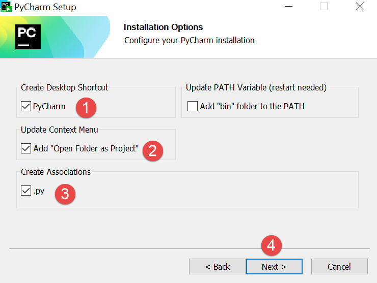
- Click [1] to create a PyCharm icon on the desktop;
- Click [2] to open any folder in the file system as a Python project;
- In [3], Python files will have the .py extension;
- Click [4] to proceed to the next step;
The next window offers the configuration options again [1]:

- In [2], select the [Light] theme. The user can choose their preferred theme;
- In [3], leave the IDE in English;
- In [4], keep the Windows shortcuts;
Let’s create our first Python project [1-2]:

This opens the following window:

- In [2], enter the name of the folder to be created for the project;
- In [3], specify that the different versions of the code that will be saved will be managed by the Git version control system. PyCharm allows you to use others;
- In [4-6], specify that your project will use a virtual environment. The virtual environment will create a [.venv] folder at the root of the project. All plugins (packages) used by your project will go into this folder. This ensures isolation between projects when searching for plugins. The project searches for its plugins only within its own virtual environment [.venv] and nowhere else, where it might find plugins with the same names but potentially different versions that are sometimes partially incompatible with each other;
The PyCharm IDE displays the created project as follows:

- In [1-2], the project directory structure;
- In [3], the project folder;
- In [4], the project’s virtual environment folder. This is where the plugins we’ll use for the project will be installed;
Before we start coding, let’s delve deeper into the IDE configuration:

- Click [1] to display the main menu;
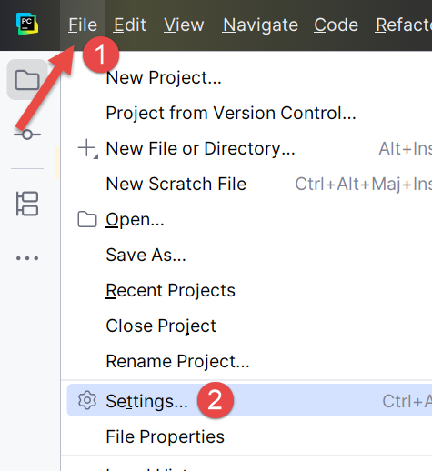
- In [1-2], configure the IDE;

- In [1-4], specify that you want to see the main menu above the main toolbar. You are not required to do this. We are doing it here to clarify the screenshots included in this document. Confirm your change;
From now on, the main menu is always displayed [1]:

Let’s continue configuring the IDE:
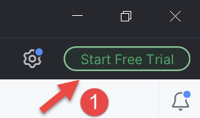
In the top-right corner of the PyCharm window, you’re offered the chance to try the Pro version of PyCharm. Depending on how you installed PyCharm, the Pro version may even have been installed automatically (2025). This adds additional menu options.

If you installed the Pro trial version for a one-month trial, you’ll see the message [2] in the top-right corner.
To ensure consistency with the screenshots that follow, I’ll show you how to cancel the Pro trial version of the IDE (you can return to it at any time):

- In [1-2], manage your IDE subscriptions;

- In [1], disable the Pro version. The IDE will restart;
Now let’s configure the Python interpreter that will run our project. We remember downloading one in a previous step:


- In [1-3], configure the project’s Python interpreter;
- In [4], the interpreter path;
- In [5], the packages (plugins) associated with this interpreter;
In [4], let’s find the full path to the interpreter being used:


- In [3], we see that the Python interpreter used is located in the project’s virtual environment folder [.venv];
It is possible to change the Python interpreter, which may change the plugins available to the project:
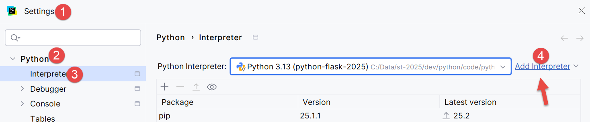
- In [4], add a Python interpreter;

- In [5], add a local interpreter. PyCharm will then scan the machine’s PATH for a [python.exe] binary;

- In [1], specify that the new interpreter should use the project’s existing virtual environment [.venv];
- In [2], the IDE suggests the Python application installed in a previous step as the interpreter;
- Confirm this selection;

- In [4], the new interpreter;
- In [5], the packages the project will have access to. This is the main difference resulting from the interpreter change. If you manage multiple projects that use different packages, it is preferable to use the packages from each project’s virtual environment. This way, you have control over the versions of the plugins you use. For this reason, we will keep the virtual environment’s interpreter:


Let’s go a little further into the configuration:
 |  |
- In [1-2], enter the IDE’s configuration mode;
- In [3-4], configure system options;
- In [5], do not prompt for confirmation before exiting the IDE;
- In [6], when exiting the IDE and there is a running process launched by the executed code, stop it;
- In [7], when the IDE is launched, the last project used is not automatically reopened. The user is allowed to choose their project;
- In [8], when the user manages multiple projects at the same time, each project has its own window;
- In [9], we have specified the default folder for our project;
Now we can start coding. Let’s begin by creating a folder where we’ll place our first Python script:
 |  |
- Right-click on the project, then [1-3] to create a folder;
- In [4], type the folder name: it will be created in the project folder;
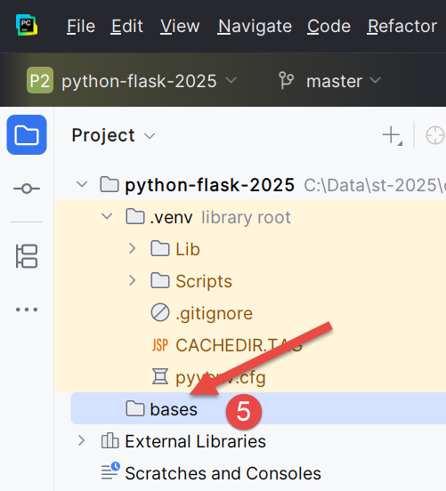
Next, let’s create a Python script:
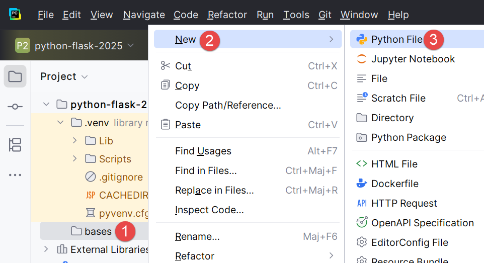 |  |
Right-click on the [bases] folder, then [1-4]:
 |  |
- Remember that we included the Git version control system in our project. This was done when we created the project, where we checked the Git option. Git can take snapshots of the project at different stages of its development. Here in [1-3], the IDE asks us if we want to include the [bases.py] file we’re currently creating in the snapshot. We answer yes [3]. Additionally, we check [2] so that this is done automatically whenever a file is created. We’ll briefly revisit Git a little later;
- In [4-5], the [bases_01] script has been created and is ready to be edited;
Let’s write our first script:
 |  |
- Lines 1, 3: comments begin with the # symbol;
- Line 2: initialization of a variable. Python does not declare the type of its variables;
- Line 4: screen output. The syntax used here is [format % data] with:
- format: name=%s where %s denotes the placeholder for a string. This string will be found in the [data] part of the expression;
- data: the value of the variable [name] will replace the %s placeholder in the format string;
- With [1-2], you can reformat the code according to the recommendations of the Python governing body. You can also press Ctrl-Alt-L on your keyboard;
In the screenshot, you can see that some text is underlined. PyCharm flags spelling errors in comments and strings. It refers to them as typos. By default, it is configured for English text. To prevent it from flagging typos in French, proceed as follows:
 | 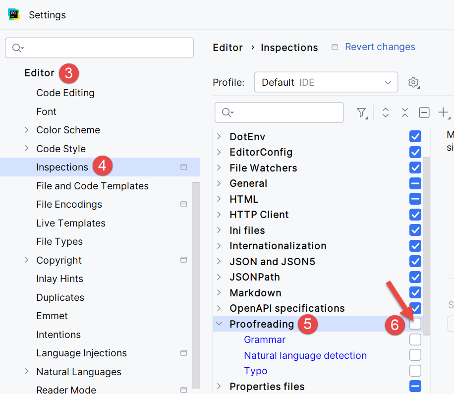 |
- In [1-2], configure the IDE;
- In [3-6], disable the [Proofreading] option in the editor;
 |  |
In [7], the typo highlighting has disappeared. The script is run by clicking the [8] icon on the main toolbar. The result is as follows:
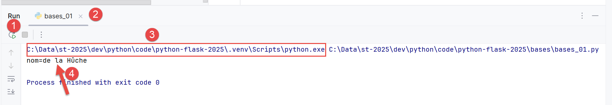
- In [1-2], a results window has opened;
- In [3], we can see that the code in [bases_01.py] has been executed by the Python interpreter in the project’s virtual environment;
- In [4], the result of the execution;
To run the scripts in this document, download the code from the URL |Generate a Python script with AI tools| (OneDrive cloud), then in PyCharm, proceed as follows:
 |
- In [1-2], close the project you are currently working on;
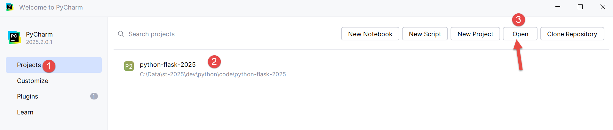
- In [1], select the [Projects] option;
- In window [2], you’ll see a list of the most recent projects you’ve worked on;
- In [3], indicate that you want to open an existing project;
 |
- In [1], open the folder you downloaded;
 |
- In [1-2], select the PyCharm project;
Let’s configure this project to have a virtual execution environment:
 |
- In [1-2], configure the new project;
 |
- In [3-4], configure an interpreter for the project;
 |
- In [5-6], select a virtual execution environment;
 |
- In [7], the new Python interpreter used for the project;
Once this is done, you can run the project’s scripts:
 |